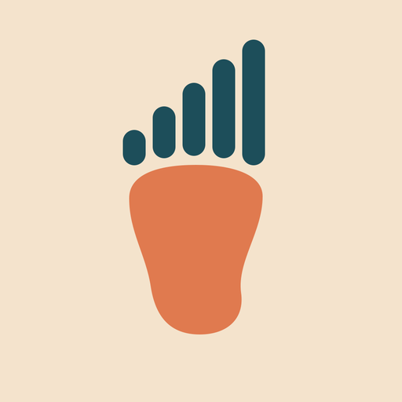

StridrSupport
Help for Stridr, the private step-debt and step-goal app for iPhone.
Email altezlansing@gmail.com. Please include your iPhone model, iOS version, the Stridr version (Settings › About) and which device records your steps (iPhone, Apple Watch, Fitbit, other).
Frequently asked questions
What do I need to use Stridr?
An iPhone with iOS 17 or later. Steps come from Apple Health: your iPhone counts them on its own, and an Apple Watch or a Fitbit (synced into Apple Health by a sync app) adds to them without double counting.
Stridr says it can’t find any steps.
- Open iPhone Settings › Health › Data Access & Devices › Stridr and turn on Steps.
- Check that the Health app shows steps (Health › Browse › Activity › Steps).
- Pull down on Stridr’s Today screen to refresh.
What are Step Debt and Step Bank?
Each completed day is compared with your daily goal (or plan target). Steps short of it add to Step Debt; extra steps pay debt back at 65% (100 extra steps clear 65 steps of debt). Extra steps beyond zero debt go into the Step Bank, which covers future short days. Both fade by 15% a day and only the last 14 days count. Today isn’t counted until it’s over.
How is my step goal set?
In Settings › Step Goal choose Auto (learned from the median of your last 4 weeks; it moves only after your usual shifts by 10% or more for about 2 weeks; 7,000 with no history), My Own Goal, or Weight Loss Plan (adults 18+, after setting up a plan). Switching away from Weight Loss Plan ends the plan; your Weight Log is kept.
What does On Pace mean?
It compares your steps so far with where you’d normally be by this time of day, based on your hourly steps over the last 4 weeks, scaled to today’s target. Within 300 steps it says “Right on pace”.
How does the Weight Loss Plan work?
Pick a target weight and a pace (0.5, 1 or 1.5 lb a week). Stridr estimates calories per step from your height, weight and sex, and adds enough extra steps to your usual to match that pace (3,500 kcal per lb). Ramp-Up builds up over 2 weeks. Weekly weigh-ins re-plan the target, and after 3 weigh-ins check-ins adjust it by at most 15% a week. These are estimates only.
A day was a rest or sick day.
Turn on Excuse Today on the Today screen. An excused day adds no Step Debt.
Notifications don’t arrive.
Allow notifications in Stridr’s Settings and in iPhone Settings › Notifications › Stridr. They are scheduled on your iPhone and refreshed when you open Stridr.
Does Stridr upload or share my data?
No. Everything is processed on your iPhone. Stridr has no servers, accounts, analytics, ads or tracking. It reads steps from Apple Health and writes only your weigh-ins, if you allow it. See the Privacy Policy.
How do I delete my data?
Delete the Stridr app. This removes everything Stridr stored. Data in Apple Health is not affected (weigh-ins Stridr saved there can be deleted in the Health app).
Is Stridr medical advice?
No. Stridr gives estimates only and isn’t medical advice. Talk to your doctor before starting a weight-loss plan.